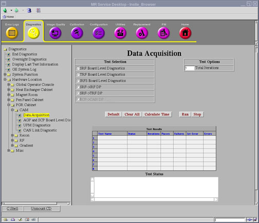

Proprietary to General Electric
Direction 5500113, Rev# 3
Discovery MR450 1.5T Service Methods
Module Version 3.0, Version Date 8/19/08
Proprietary to General Electric |
Diagnostics >> System Function >> Acquisition/Pulse Generation >> Data Acquisition
Diagnostics >> Hardware Location >> PGR Cabinet >> CAM >> Data Acquisition
Illustration 1: Data Acquisition Screen

Tests data path between the SRF and the TRF boards.
Note that the SRF and TRF boards are physically included in one assembly and are one board (SRF/TRF Board).
This diagnostic assumes that the following boards are functioning properly.
AGP
TRF
SRF
Click [Calculate Time] to get an estimate of the time it will take to run the selected diagnostics.
The test executes in this order:
The AGP configures SRF to play out a PSD with a test data pattern.
The SRF sends the test data and the TRF recaptures it in a monitor FIFO.
The AGP reads the monitor FIFO and compares the data to the original data.
| NOTE: | The Test Options settings should not be changed from their default settings unless instructed to do so by a GE Healthcare engineer. There are very few circumstances when these settings ever need to be changed. |
Output values are judged pass or fail. In the event of failure, the details of the failure can be found in the GE System Log.
Although, in the case of errors you can click the 1st Error number to see the nature of the error, it is recommended that you view the GE System Log to view all the errors that were recorded.
If this test fails, perform the SPU to STIF Loopback to verify the MGD chassis. Perform the SPU- Fiber Optic Repeater Loopback test to verify the repeater in the penetration panel. Verify that the PAC module has power.
| ||||
| Prior to scanning, a TPS Reset is required. | ||||